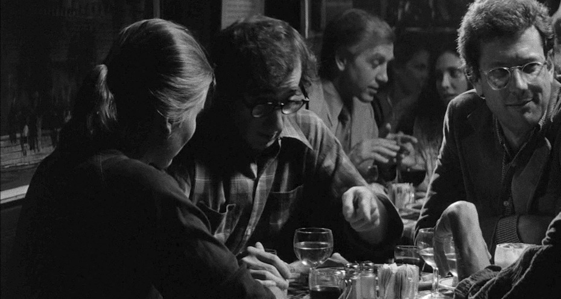
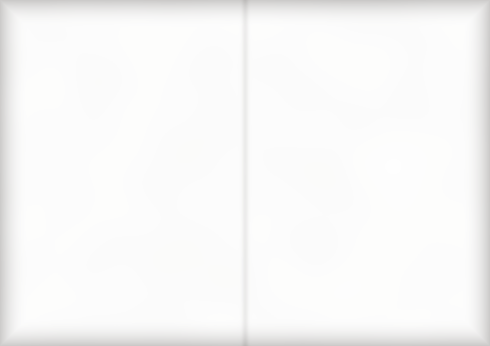

Upper East Side, New York
Edie’sEst. 1963

The back table, any night.
House notes
Brunch on Sundays from eleven.
Book parties in the back room.
Tap water runs clear.
Nothing here is overrated.
Edie’s
Best room in New York to argue about Bergman. Get the cheesecake. It’s on my list.
Ike
Second Ave. at 88th St., N.Y. 10028.
Menu No. 79.Dinner till two.
Prices subject to change.
Menu No. 79.Dinner till two.
Prices subject to change.
Second Avenue at 88th Street
Edie’s
RESTAURANT & SALOON
